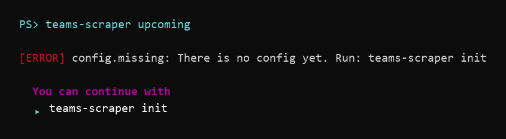

Errores
Una corrida que no puede seguir lanza TeamsScraperError. El code es inglés estable. La frase sigue el idioma. La terminal imprime los dos y sale con 1.
[ERROR] config.missing: Todavía no hay configuración. Ejecuta: teams-scraper initCon --lang es el código sigue siendo config.missing y cambia la frase. Desde Python, lee error.code. El fallo original queda como causa cuando lo hay.
Un comando malo o una bandera mala sale con 2. Ese camino es el lector de argumentos, no uno de estos códigos.
| Código | Cuándo pasa | Qué correr |
|---|---|---|
config.missing | Todavía no hay config. | teams-scraper init |
config.invalid | La config no es válida, o no tiene navegador. Un --part malo usa este código también. | teams-scraper init |
browser.not_found | Falta el ejecutable, o no hay navegador configurado. | teams-scraper config |
browser.profile_locked | Ese navegador ya tiene este perfil abierto, y el candado no se puede quitar. | Cierra esa ventana y corre el mismo comando. |
browser.start_failed | La ventana no se pudo preparar. | Corre el mismo comando otra vez. |
browser.closed | Se cerró la ventana del navegador. | Corre el mismo comando otra vez. |
network.unreachable | teams.microsoft.com en el puerto 443 no respondió. | Revisa la red. |
auth.login_required | Teams pide inicio de sesión. Una terminal espera y te pide Enter. Desde código se lanza esto y no espera. | teams-scraper open |
subjects.missing | Este modo necesita una clase. | teams-scraper init |
chats.missing | chats arrancó sin un chat, o el botón de Chat no apareció. | teams-scraper config, o pasa --chat. |
chats.not_allowed | Ese chat no está en la lista permitida. | teams-scraper config |
teams.timeout | Teams, una pestaña o la lista de archivos no terminó de cargar. | Corre el mismo comando otra vez. |
teams.assignments_unavailable | No se abrió Assignments. | Corre el mismo comando otra vez. |
teams.card_missing | Esa tarjeta no está en la lista. | |
teams.card_mismatch | La tarea abierta no coincide con la tarjeta, así que no se guardó nada. | |
teams.sharepoint_unavailable | SharePoint no cargó, así que este pase no se guardó. | |
teams.class_missing | Esa clase no está en la lista de Teams. | Revisa name en la config. Tiene que coincidir con Teams. |
teams.channel_missing | Ese canal no está en la lista. | |
teams.chat_unavailable | El chat no se abrió, o la conversación no se quedó seleccionada. | |
teams.chat_list_missing | No apareció la lista de chats. | |
teams.chat_list_empty | La lista de chats no mostró una conversación. | |
teams.read_failed | Este paso no pudo terminar. La frase dice cuál. | |
storage.missing_id | Una tarea necesita un id antes de guardarse. | |
storage.bad_id | Ese id no puede ser nombre de carpeta, así que el catálogo no se escribió. | |
storage.failed | El almacén falló. La frase incluye el detalle. |
